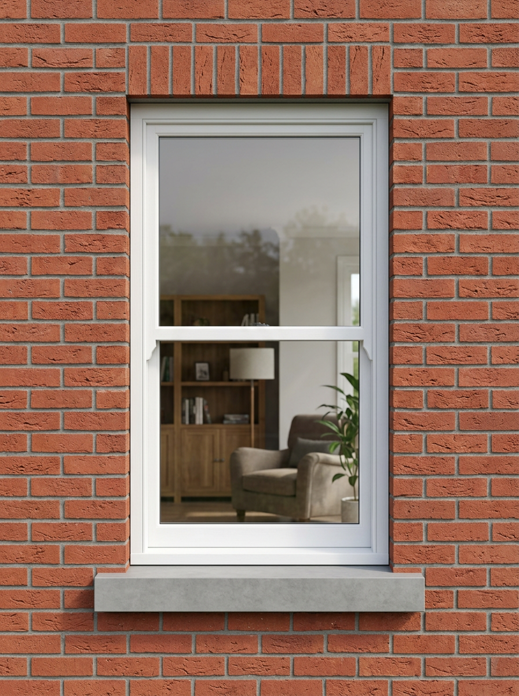

Timber Sash Windows Built for London
London's architectural character depends on its windows. From Georgian townhouses in Islington to Victorian terraces in Clapham, the timber sash window is the defining feature that ties these buildings together. Whether you are restoring an original property, replacing failed double glazing, or specifying windows for a new build in a conservation area, the sash window you choose will define the building for decades.
At Prime Sash Windows, we manufacture bespoke timber sash windows in our own workshop. Every window is made to your exact dimensions, with the profiles, glazing bars, and finishes you specify. We serve the whole of London and Hertfordshire, with free site surveys and a dedicated project manager for every order.

What We Offer
Double Hung Sash
The classic London sash. Both sashes slide vertically within the box frame. Available with spring balances or traditional weights and pulleys.
Single Hung Sash
Top sash fixed, bottom sash slides. A simpler mechanism suited to certain period styles and tighter budgets.
Arched Sash Windows
True curved heads for period properties. Gothic, segmental, and semi-circular arches made from laminated timber sections.
Box Sash Replacement
Like-for-like replacement of existing sash windows. We match original profiles, horn details, and glazing bar patterns.
Sash Window Prices in London
Timber sash window prices depend on size, glazing type, and finish. Below is a guide based on standard double-hung sash windows with double glazing and a factory-applied paint finish.
| Window Size | Double Glazed | Triple Glazed |
|---|---|---|
| 600 × 900mm | From £1,100 | From £1,350 |
| 800 × 1200mm | From £1,400 | From £1,700 |
| 1000 × 1500mm | From £1,750 | From £2,100 |
| 1200 × 1800mm | From £2,200 | From £2,650 |
Prices include factory-applied primer and topcoat in any RAL or Farrow & Ball colour. Dual colour finishes (different inside and outside) carry a 15% surcharge. Arched heads, non-standard profiles, and passive glazing are priced individually.
Get Your Exact Price Now
Design your sash window in 3D — choose dimensions, colours, glazing bars, and glass type. Get an instant budget price.
Open the 3D ConfiguratorGlazing Options
Double Glazing
Our standard double glazed units use low-emissivity glass with argon gas fill, achieving a centre-pane U-value of 1.4 W/m²K. This meets current Building Regulations for replacement windows and is the most popular choice for period properties.
Triple Glazing
For improved thermal performance, our triple glazed units achieve a U-value of 1.2 W/m²K. The additional glass pane adds approximately 4mm to the overall sash thickness but provides noticeably better acoustic insulation — particularly useful for properties on busy London roads.
Passive Glass
Our highest performance option achieves a U-value of 0.8 W/m²K, meeting Passivhaus standards. This exceeds Part L requirements by a significant margin and is increasingly specified for conservation area projects where planning officers want to see genuine thermal improvement.
Colour & Finish
Every window is spray-finished in our dust-free workshop using microporous exterior paint over a high-build primer system. You can choose from any RAL colour, the full Farrow & Ball palette, or provide a custom colour reference. Our 3D configurator shows you the exact colour on the window before you order — including dual colour combinations with different interior and exterior finishes.
Security & Compliance
All our sash windows are PAS24 enhanced security as standard — there is no upgrade charge. Every window is tested to resist forced entry and comes with multi-point locking. We are FENSA registered, which means your installation is self-certified for Building Regulations compliance and you receive a FENSA certificate for each window.
- PAS24 — Enhanced security as standard on every window
- Part L compliant — All glazing options meet or exceed current thermal requirements
- 4–5 week delivery — manufactured in our UK workshop, not imported. Standard configurations delivered in 4–5 weeks.
- FENSA registered — Self-certified Building Regulations compliance
- Part Q compliant — Ground floor and accessible windows meet security requirements
- Made in Britain — Manufactured in our own workshop, not imported
Conservation Areas & Listed Buildings
Many of our projects are in London conservation areas where planning approval is required for window replacement. We work regularly with conservation officers across London boroughs and can provide detailed drawings, timber specifications, and glazing bar profiles to support your planning application. For Grade I and Grade II listed buildings, we can replicate original profiles to the exact millimetre.
How It Works
We designed our process to save you time — whether you are a homeowner, architect, or builder.
- Design online — Use our 3D configurator to spec your windows. Choose dimensions, colours, bars, glass type. Get an instant budget price.
- Book a survey — We visit your property, take precise measurements, and confirm the specification. Free across London and Hertfordshire.
- Receive your quote — A detailed quote with drawings, within 48 hours of the survey.
- Manufacturing — Your windows are built in our workshop. Typical lead time is 6–8 weeks.
- Installation — Our fitting team installs your windows. FENSA certificate issued on completion.
Areas We Cover
We serve all London boroughs and postcodes, plus Hertfordshire. Our most active areas include Westminster, Kensington & Chelsea, Camden, Islington, Hackney, Wandsworth, Richmond, Hampstead, Dulwich, Greenwich, and Chiswick. In Hertfordshire, we cover St Albans, Harpenden, Berkhamsted, Hitchin, Welwyn, and Hatfield.
Ready to Start?
Design your sash windows in 3D and get an instant price. No account needed.
Get Your Quote Book a Survey